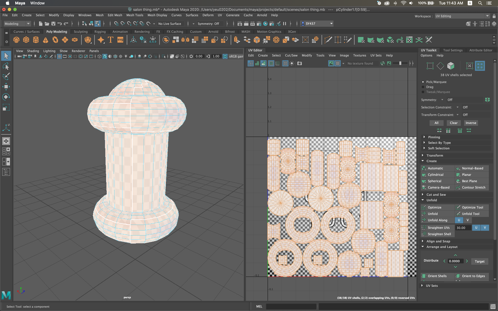
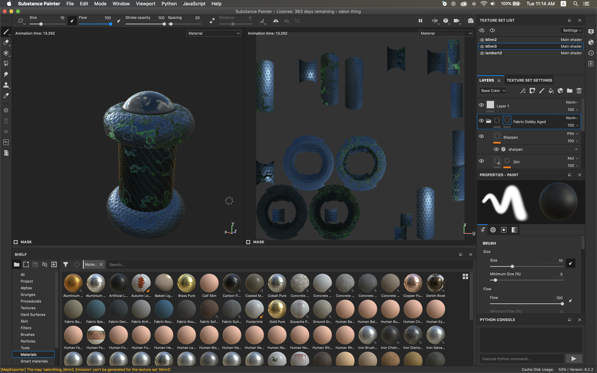
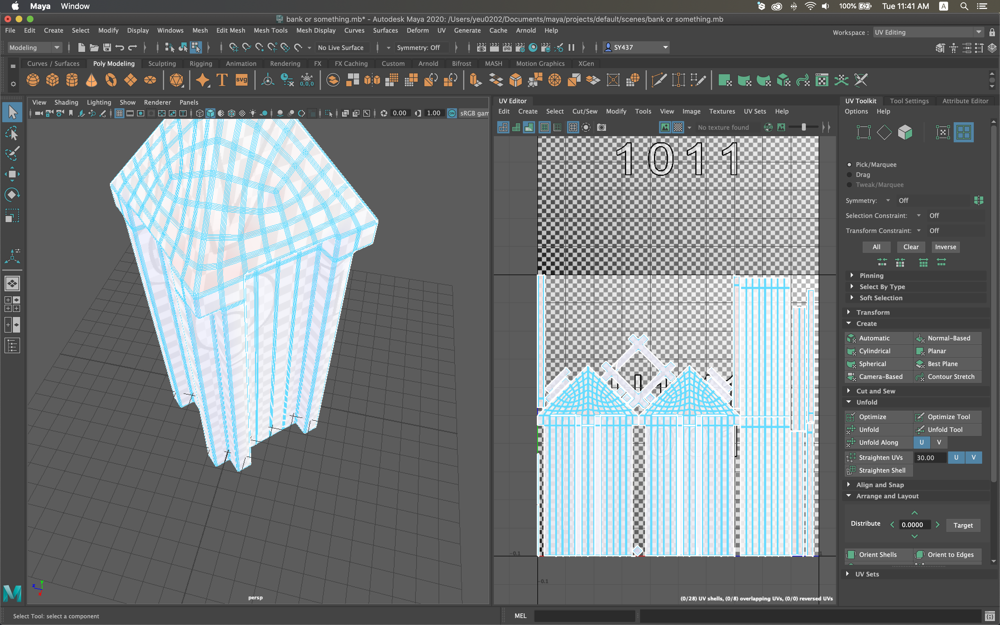
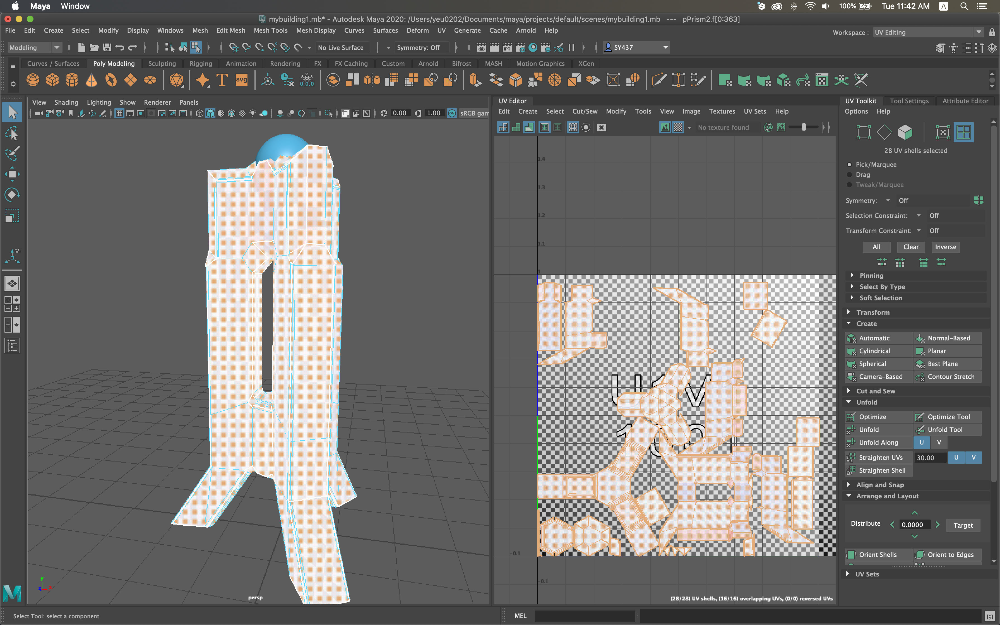
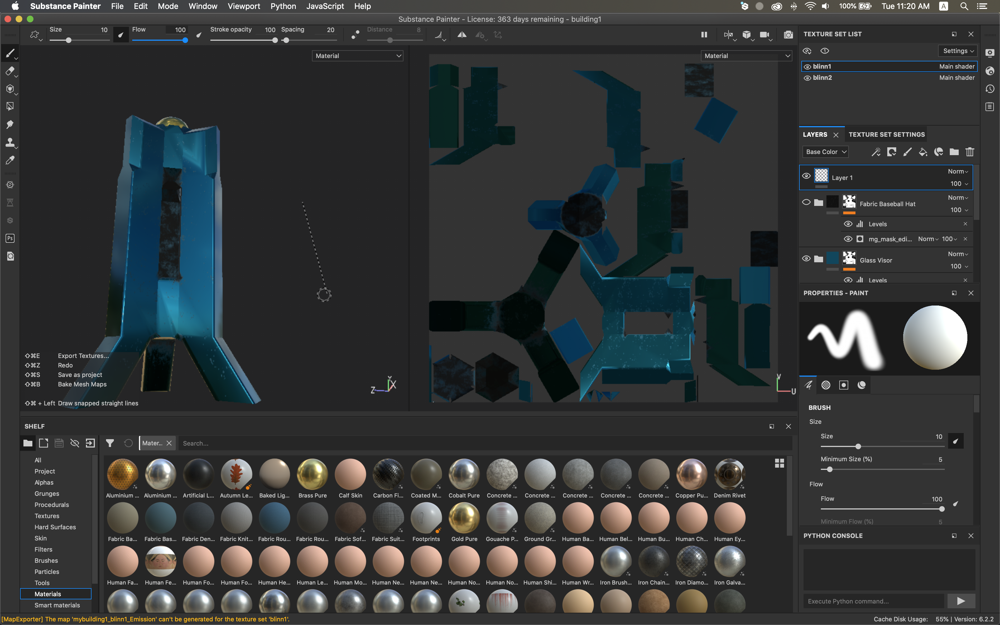
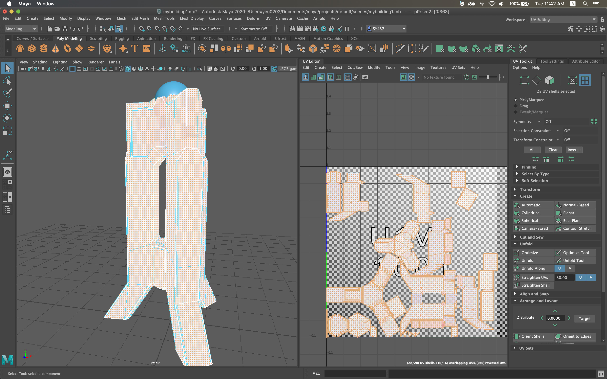
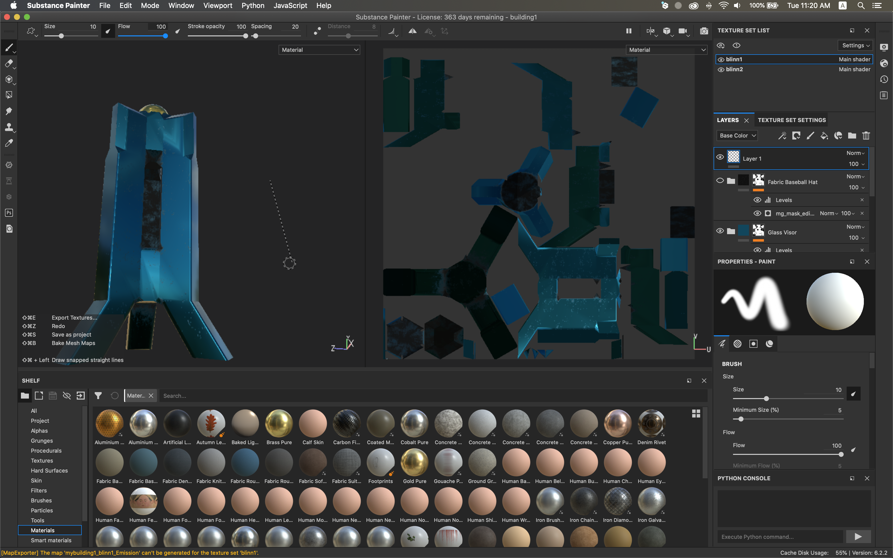

VR Trip
This is a VR project done for Peter's assessment 1. I worked in a group with Masha, Gaia, and James to make a futuristic VR experience in Unity. I learned how to make some 3D models, implemented some audio visualization, and implemented the movement of some objects in the game. I also edited some sections of the video.
Project Video
The brief for this assessment was to design, develop, prototype, or propose an engaging experience, and document the whole process with a video.
3d Models
   



Gaia taught us how to use Maya and Substance to create and paint simple 3D objects.
Here are some screenshots of some objects I made and painted.
Some stuff I learned was creating the objects, how to stretch different faces to manipulate the shapes, UV mapping, and painting with smart textures.
I found that creating these 3D objects more difficult and time consuming than I expected. This is probably partly due to the fact that it's my first time trying 3d modelling, but the amount of time spent just to create a simple building was quite long.
Some stuff I learned was creating the objects, how to stretch different faces to manipulate the shapes, UV mapping, and painting with smart textures.
I found that creating these 3D objects more difficult and time consuming than I expected. This is probably partly due to the fact that it's my first time trying 3d modelling, but the amount of time spent just to create a simple building was quite long.
Audio Visualization
I learned how to create audio visualization in Unity from a tutorial by Peer Play.
This created some cool effects that make the scene pulse with the music which I liked. You can see the audio visualization implemented in the project video at around 3:10.
This created some cool effects that make the scene pulse with the music which I liked. You can see the audio visualization implemented in the project video at around 3:10.
Additional comments
I learned a lot throughout the process of working on this project. I learned a little about audio visualization and
had a go at 3d modelling.
I think this project ended up being pretty good in terms of the skills and knowledge learned, and the final product also looks amazing. I think that the project can certainly be improved with more time but we did the best with the time we were given.
I think this project ended up being pretty good in terms of the skills and knowledge learned, and the final product also looks amazing. I think that the project can certainly be improved with more time but we did the best with the time we were given.